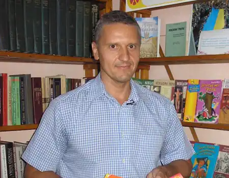
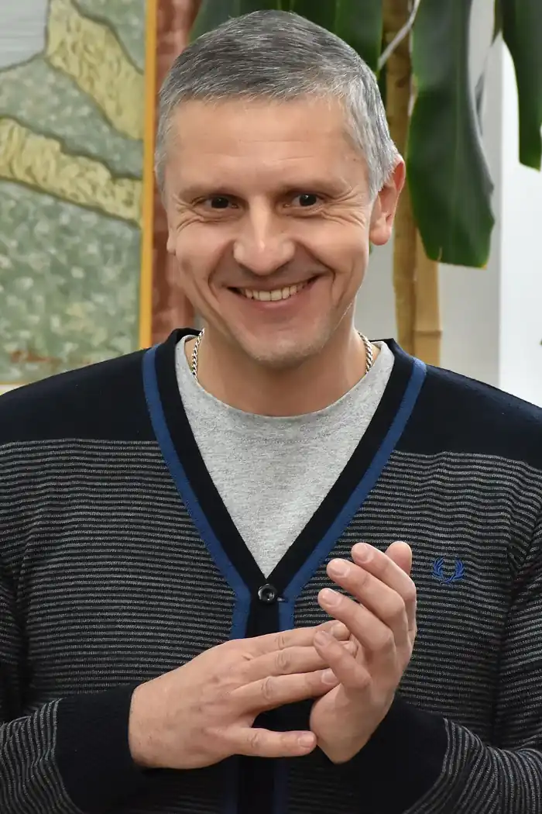

Сергій Володимирович Гридін народився 8 липня 1971 року у місті Здолбунові Рівненської області. Майбутній письменник ходив до місцевої школи, полюбляв займатися спортом. У 1985 році його батька відправили у відрядження до Монголії, куди переїхала вся родина і проживала там два роки. Згодом сім’я повернулась у рідний Здолбунів.
Після повернення до України Сергій закінчив середню школу у Здолбунові у 1988 році. Впродовж року він набуває життєвого досвіду у слюсарній бригаді. Згодом вступає на економічний факультет Рівненського інституту інженерів водного господарства, який закінчує у 1994 році.
Після закінчення працює за бухгалтерсько-економічними спеціальностями. Літературна діяльність стала для Сергія Гридіна захоплюючим хобі. Коли сину письменника виповнилося одинадцять років, він всіляко намагався залучити хлопця до читання. З того самого моменту і почав писати книги, адресовані дітям. Саме у цей період була написана перша книга "Федько, прибулець з інтернету", яка дала старт його літературній діяльності. Герої цієї історії – звичайні хлопці Сашко та Петрик – з волі незвичайного інтернетного Віруса потрапляють у віртуальний світ. Їм добре знайоме бажання не йти до школи, похвалитися чимось цікавим, потрапити у справжню пригоду, розважитися, долаючи небезпеку й просто пограти у комп’ютерну гру так, щоб забути, по який бік екрану вони перебувають. Дітям потрібно подолати чудовиськ та голодних крокодилів, пройти відповідні рівні, щоб повернутися додому. Сергій Гридін запрошує читачів у захоплюючу комп’ютерну гру. Далі з’являється продовження Федькових пригод. У книзі розповідається про те, що зовсім не підступний, а кумедний і дуже милий комп’ютерний вірус Федько – у небезпеці. Щоб визволити його з віртуального полону, друзям Сашкові, Петрикові та Марічці доводиться блукати віртуальним містом та поквитатись з наймогутнішим комп’ютерним вірусом у світі. Третя книга – Федько у пошуках Чупакабри. – саме для тих, хто ховається від жаху під ковдру у темній кімнаті, слухаючи страшні оповідки, у кого бігають мурашки по шкірі від передчуття зустрічі з невідомим... Весела, насичена подіями історія про комп’ютерного віруса Федька та його друзів, а також нових героїв допоможуть поринути у вир пригод реального світу. Про дивне перетворення хлопчика Олега на власного кота розповідає Сергій Гридін у книзі "Кігтик Ковбаско". П’ятикласникові Олегу життя кота Кігтика Ковбаска здається мало не щастям – їж, гуляй і вилежуйся, скільки влізе. Проте одного разу хлопцеві доведеться прокинутися... котом. А Ковбаскові – піти до школи замість свого господаря. Якими пригодами обернулось це дивне перетворення, читачі дізнаються із книги. Але не тільки про незвичайні пригоди героїв розповідається у творах Сергія Гридіна. Письменник пише також про дуже серйозні речі. Книга "Не такий": повість для підлітків, які шукають себе вражає своєю відвертістю. Про школу, родину, суспільство, полишених самих на себе дітей, і взагалі про життя, яким воно є – без прикрас, сповнених суворих реалій та випробувань. Може, хто скаже, що бути дитиною, тим паче підлітком – просто. Але якщо ти відрізняєшся від решти, скажімо, надмірною вагою, тобі не оминути зневаги і знущань однолітків і навіть дорослих. Однак у тебе залишається шанс знайти в собі силу піднятися над своїми образами, зусиллям волі змусити себе стати "таким", який порятує не лише себе, а й простягне руку допомоги слабшому. Твори С. Гридіна двічі ставали переможцями конкурсу "Краща книга Рівненщини": у номінації "Краще видання для дітей" (2013) та "Краще видання для юнацтва та молоді" (2015). У 2012 році його книга "Федько у пошуках Чупакабри" потрапила до довгого списку премії "Книга року ВВС". Книга "Не такий" увійшла до короткого списку номінантів щорічної премії "Дитяча книга року ВВС-2013". Доля письменника склалася так, що за покликом серця він пішов боронити країну від ворога, відклавши свої справи та літературне хобі на потім, виборюючи мир та незалежність на сході України.